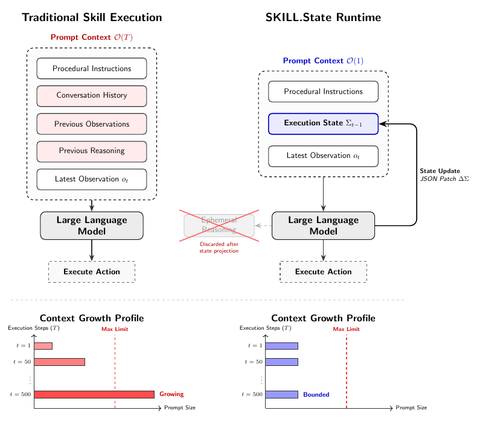

SKILL.state: A Constant-Size Execution State Instead of an Append-Only History
TL;DR
- SKILL.state (arXiv 2608.26263; Sanket Badhe, Priyanka Tiwari, Jonghyun Chung, Google) throws away the conversational transcript entirely: at every step the model sees only the skill spec \( P \), a structured execution state \( \Sigma_t \), and the latest observation \( O_t \). The reasoning trace is used to produce a validated JSON state patch, then discarded permanently — prompt size stays flat (~1.8k tokens) no matter how long the run gets.
- The token math is brutal for transcripts: on a 100-step warehouse task with Gemini-3-Flash, a LangGraph-style runtime burns 1,062,387 tokens for 0.91 accuracy; SKILL.state burns 65,408 for 0.94 — a 16.2× reduction with better accuracy, and the gap widens to 200 steps (122k vs 6.1M for the summarization baseline).
- The gain is from structure, not brevity: budget-matched controls pinned to the same ~1,800-token prompt collapse (sliding window 0.18, LLMLingua compression 0.22, capped summary 0.52 vs SKILL.state 0.94). And it's not synthetic-only — on InterCode CTF it lifts pass@1 to 54.2% (+7.8 over the best history baseline) while cutting tokens ~60%.
Why this matters
Nearly every long-horizon agent failure catalogued in this tracker traces back to the same substrate: an append-only context that grows until it poisons decisions. MerchantBench's year-long agents drown in stale feedback; FM-Bench (tracked today) found self-managed memory degenerates into "an archive that only grows or a plan rewritten every season." The standard mitigations — summarization, retrieval, structured scratchpads bolted onto the transcript — all keep the conversational execution model and try to manage its growth.
SKILL.state is the clean version of the alternative hypothesis: for procedural skills, the transcript is not load-bearing at all. Keep a typed, validated state object; regenerate reasoning fresh each step; never show the model its own past. That converts context management from an art (what to summarize, when to retrieve) into an engineering discipline (schema design + deterministic merge + validation), with provable \( \mathcal{O}(1) \) prompt and \( \mathcal{O}(T) \) cumulative token complexity instead of \( \mathcal{O}(T^2) \).
The reason to pay attention now is convergence. Recuris arrived at verified working memory as the thing that makes skill libraries work; the Rohan Paul thread that surfaced this paper framed it as "long-horizon agents may need far less history than we give them"; LongHorizon-Harness (also tracked today) argues audited task state is the reliability bottleneck. Three independent lines are pointing at the same design shift: state over transcript.
The core idea
Formally, the execution context at step \( t \) is:
where \( P \) is the immutable procedural specification (the skill), \( \Sigma_t \) the structured execution state, and \( O_t \) the latest environment observation. The model never receives previous observations, previous actions, or previous reasoning.
Each step, the model generates a triple \( (R_{t},\Delta\Sigma_{t},a_{t}) \): a full chain-of-thought \( R_t \) (unconstrained — within-step reasoning is intact), a state patch \( \Delta\Sigma_t \) (a JSON dictionary of key mutations/deletions), and an action \( a_t \). The runtime validates the patch and applies:
where \( \oplus \) is a deterministic dictionary merge with null-deletion semantics. Then \( R_t \) is deleted forever. Reasoning is treated as transient computation whose only durable output is a state transition — the model's memory is whatever it chose to commit, nothing more.
Complexity falls out immediately: conversational runtimes pay \( \sum_{t=1}^{T}|C_{t}|=\mathcal{O}(T^{2}) \) cumulative tokens because step-\( t \) prompts contain the whole history \( C_t \); SKILL.state pays \( |P_{t}|=\mathcal{O}(|P|+|\Sigma|+|O|) \) per step, hence \( \sum_{t=1}^{T}|P_{t}|=\mathcal{O}(T) \) total.
The schema is authored once per domain, not per task: all 100 InterCode CTF challenges run on one static 5-field schema — discovered_flags, tested_hypotheses, active_files, working_dir, cmd_summary. That's the whole memory system.

Figure 1 from the paper: the runtime swap and its context-growth profiles. The crossed-out "ephemeral reasoning" box is the load-bearing design decision.
How it works
Algorithm: SKILL.state runtime
input: procedural spec P, initial state Σ_0 (typed schema, authored per domain)
for t = 0 .. T:
receive latest observation O_t
prompt ← (P, Σ_t, O_t) # no history, ever
(R_t, ΔΣ_t, a_t) ← LLM(prompt) # full CoT allowed within the step
validate ΔΣ_t against schema # deterministic, runtime-owned
if invalid: rollback, retry # malformed patch can't corrupt Σ
Σ_{t+1} ← Σ_t ⊕ ΔΣ_t # dict merge, null = delete
discard R_t permanently
execute a_t
Two properties of this loop matter more than the loop itself:
Validation owns the state, not the model. Schema ownership and patch validation live in the deterministic runtime. A malformed patch triggers rollback-and-retry; it cannot corrupt \( \Sigma_t \). This is the same "commit only what the environment/schema supports" discipline Recuris implements with checkers — here enforced syntactically.
Distractors die at the patch boundary. Noise (telemetry, irrelevant events) appears in \( O_t \) once; unless the model commits it to state, it never appears in any future prompt. In transcript runtimes every distractor is permanent context.
The evaluation is unusually well-controlled. Baselines span the three standard paradigms — ReAct-style full transcript, MemGPT-style rolling window + summary, and LangGraph-style structured state alongside the full transcript — plus budget-matched controls (sliding window, capped summary, LLMLingua perplexity compression) that pin every method to SKILL.state's ~1,800-token prompt. Test environments: SkillExecBench (a deterministic warehouse with 500 shelves, and a git-repository graph with entangled PR/CI dependencies — ground-truth simulators so accuracy is exact), plus InterCode CTF and τ-Bench Retail/Airline. Models: Gemini-3-Flash, Gemma-4-31B-it, Qwen-3-8B-it, all at temperature 0, 5 seeds, with T≥50 differences significant at p<0.01.
Results
Scaling (warehouse, Gemini-3-Flash). At T=10 everything scores ~1.0. By T=100: ReAct 0.84 @ 1.25M tokens, summary 0.87 @ 1.08M, LangGraph 0.91 @ 1.06M, SKILL.state 0.94 @ 65k — prompt flat at ~1,905 tokens vs 29k–36k for baselines. At T=200: SKILL.state holds 0.94 @ 122k while the summary baseline hits 84k-token prompts and 6.1M cumulative. Accuracy and cost both degrade for transcripts; neither does for state.
Noise (T=50, 5–50 distractor events/turn). ReAct degrades 0.68 → 0.53; SKILL.state stays ≥ 0.97 at every noise level, because distractors are filtered at patch time.
Silent state drift. When the world changes outside the agent's action loop, history baselines hallucinate for 5–8 turns — obsolete facts in the prompt outvote the fresh contradicting observation. SKILL.state needs 0 recovery steps: the corrective observation updates \( \Sigma \) immediately and the stale fact simply no longer exists anywhere. (Scenario D — a canceled order whose implications were never observable — defeats all runtimes; state can't save you from information you never received.)
Real benchmarks (Gemini-3-Flash). InterCode CTF: 54.2% pass@1 vs 46.4% (summary) and 41.8% (LangGraph), at 387k total tokens vs ~1M — keeping tested_hypotheses in state stops the agent repeating failed commands. τ-Bench Retail: 58.3% vs 51.7% best baseline. τ-Bench Airline: 32.4% vs 28.1%, with flat ~2,800-token prompts while baseline prompts peak above 11k/step.
Budget-matched controls are the decisive experiment. Same ~1,800-token budget: truncation 0.18 (early allocations evicted), LLMLingua 0.22 (perplexity filtering deletes "redundant" slot identifiers that were semantically vital), capped summary 0.52, SKILL.state 0.94. Structured state preserves exact relational dependencies that statistical compression destroys — the win is representation, not token count.
Where it breaks. Gemma-4-31B scores only 0.42 at T=100, and the error taxonomy is telling: 68% premature state overwrite/deletion (dropping existing keys instead of merging), 20% schema/type confusion, 12% JSON syntax. Small models fail at structured-output discipline, not reasoning — which is why the authors point to constrained decoding as the fix.
How it connects
- Recuris (skill-library-long-horizon): the strongest convergence in the tracker. Recuris found a verified working-memory checklist worth +23.9 points while the skill library alone was worth +2.0; SKILL.state is the limit case — only the state survives. Recuris keeps a transcript and verifies transitions with checkers; SKILL.state deletes the transcript and verifies patches with a schema. Same thesis, different enforcement.
- LongHorizon-Harness / WeaveBench (tracked today): argues long-horizon reliability needs explicit audited task state because history becomes unreliable about what is done/failed/remaining — the diagnosis for which SKILL.state is the architecture.
- FM-Bench (tracked today): found self-managed memory collapses into ever-growing archives or constantly rewritten plans; SKILL.state's answer is to make the schema fixed and the merge deterministic so the model never manages memory free-form.
- Always-On Agents survey (durable agent state) and agentic-context-management: the broader context-engineering line this slots into; also MSCE and WikiSkill (skill-library-google) on the skill side — those evolve what the skill says, SKILL.state changes what the executor sees.
Critical take
The headline numbers come from environments that are nearly best-case for the method: warehouse/git-graph tasks are generated from a state machine, so a sufficient-statistic schema exists by construction, and the authors candidly list the three settings where the assumption fails (schema unknown in advance; an observation whose relevance is only recognized later — if you didn't commit it, it's gone forever; tasks where the history itself is the deliverable, like auditing). That second failure mode is the scary one in open-ended work: SKILL.state agents cannot have retrospective insights. A hybrid with cheap append-only raw logs on disk (retrievable but never in-prompt) would cover it and is conspicuously absent.
The baseline set is fair on paradigms but thin on frontier practice: no comparison against a well-engineered compaction setup (structured summaries with schema hints), and the LangGraph baseline carries the full transcript alongside its state, which is arguably a strawman of "stateful" — though the budget-matched controls blunt that objection, since no compressed-transcript variant comes close at equal budget. Absolute τ-Bench Airline numbers (32.4%) also remind you the runtime doesn't fix reasoning; it fixes context rot.
What I find most useful is the error taxonomy: state-centric execution converts "long-horizon reliability" from a vague context-length problem into a concrete structured-output-adherence problem (68% of small-model failures were bad merges). That is a much easier problem — constrained decoding, patch linting, schema-aware retries all directly attack it. Also worth stealing regardless of the architecture: the discipline that reasoning may only persist through an explicit, validated commit. Claude-Code-style harnesses already half-do this with todo lists and memory files; this paper is evidence for making that the whole substrate on procedural workloads. (Inferred from the paper's positioning, not something it tests: the natural deployment is inside skill runners — SKILL.md executors — where the spec P is literally the skill file.)
If you remember three things
- \( (P,\Sigma_t,O_t) \) is enough for procedural skills: reason fully within a step, commit a validated JSON patch \( \Sigma_{t+1}=\Sigma_t\oplus\Delta\Sigma_t \), delete the reasoning — \( \mathcal{O}(1) \) prompts, \( \mathcal{O}(T) \) cumulative tokens vs \( \mathcal{O}(T^2) \) for transcripts.
- Structure beats compression at equal budget: 0.94 vs 0.18/0.22/0.52 for truncation/LLMLingua/capped-summary at the same ~1,800 tokens — and 16.2× fewer tokens than LangGraph-style at T=100 with higher accuracy, +7.8 points on InterCode CTF.
- The assumption to check before adopting it: everything future-relevant must be committable to a known schema at the moment you see it. Where that fails — emergent relevance, schema discovery, history-as-output — you need a raw log to fall back on; and small models need constrained decoding or they corrupt the merge itself.